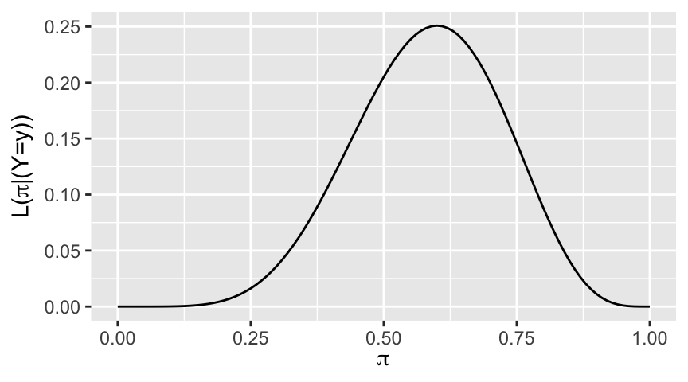
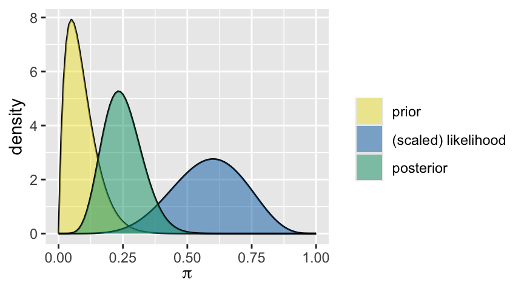
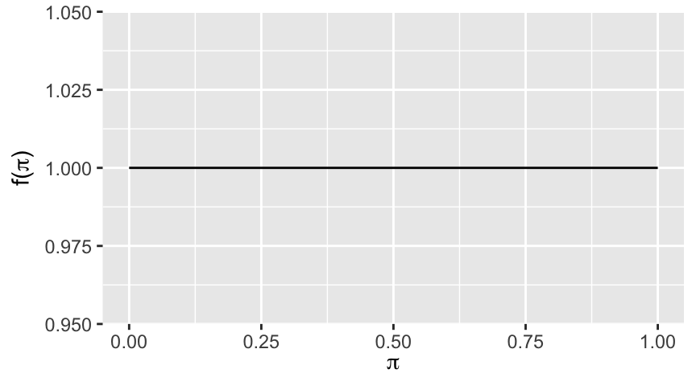
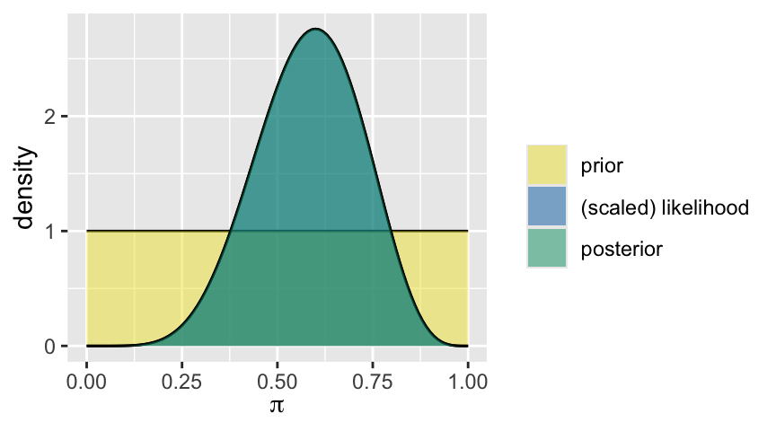
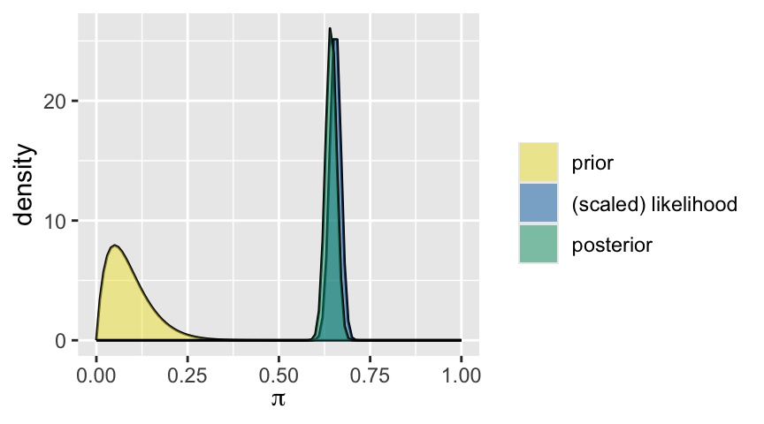
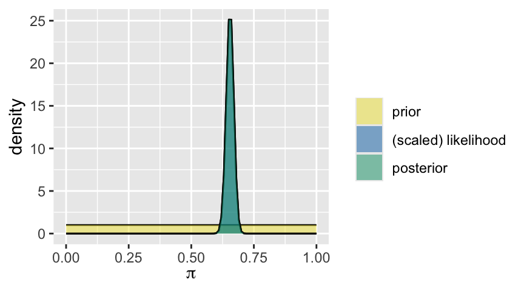
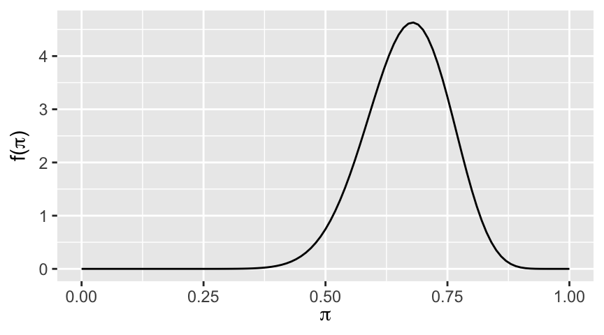
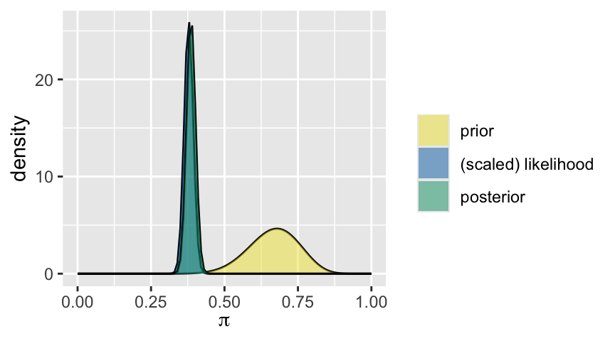

Show code
# Load packages
library(tidyverse)
#library(tidybayes)
library(bayesrules)
library(bayesplot)
# library(rstanarm)
library(broom.mixed)Alicia Johnson led this R User Connect Philadelphia to discus the book she co-authored, Bayes Rules!.
1. About1.1. Alicia JohnsonStatistics Professor.
Author of Bayes Rules!.
1.2. Materials2. Quiz2.1. What does P(heads)=0.5 mean?If I flip this coin over and over, roughly 50% will be heads.
Heads and Tails are equally plausible.
Both a and b make sense.
Scores: a = 1, b = 3, c = 2
Majority Responses: C
Frequentist Philosophy
Bayesian Philosophy
Pragmatic Philosophy
2.2 What does P(candidate A wins) = 0.8 mean?If we observe this election over and over, candidate A will win roughly 80% of the time.
Candidate A is much more likely to win than to lose (4 times more likely).
The pollster’s calculation is wrong.
Majority Response: B
Scores: a = 1, b = 3, c = 1
Freq.
Bayes
Freq.
2.3 Alicia claims she can predict the outcome of a coin flip. Mine claims she can distinguish between a Crown Burger and a Vegan Alternative. Both succeed in 10 out of 10 trials. What do you conclude?You’re still more confident in Mine’s claim than Alicia’s claim.
The evidence supporting Mine’s claim.
Score: a = 3, b = 1
Bayes
Freq.
2.4 You’ve tested positive for a very rare genetic trait. If you only get to ask the doctor one question, which would it be?P(rare trait|+)
P(+| no rare trait)
Score: a = 3, b = 1
Bayes
asking about uncertainty of hypothesis given certainty of the data
more natural question to ask
Freq. = p-value
hard to wrap minds around
asking about uncertainty in data
less natural question to ask (since data is certain)
3. Bayes Rules Activity3.1 GoalsLearn to think like Bayesians.
Apply Bayesian thinking in a regression setting.
3.2 Set Up# Load packages
library(tidyverse)
#library(tidybayes)
library(bayesrules)
library(bayesplot)
# library(rstanarm)
library(broom.mixed)3.3 BackgroundLet \(\pi\) (“pi”) be the proportion of U.S. adults that believe that climate change is real and caused by people. Thus \(\pi\) is some value between 0 and 1.
3.4 Exercise 1: Specify a Prior ModelThe first step in learning about \(\pi\) is to specify a prior model for \(\pi\) (i.e. prior to collecting any data). Suppose your friend specifies their understanding of \(\pi\) through the “Beta(2, 20)” model. Plot this Beta model and discuss what it tells you about your friend’s prior understanding. For example:
plot_beta(alpha = 2, beta = 20)
Notes:
proportion between 0 and 1 (not \(-\infty\) to \(+\infty\))
this model, beta-2-20, is right skewed
3.4.1 What is your friend saying is the most likely value of pi?About .12 or 12 % or people believe in climate change.
spike of model is best estimate
looking at range the prior model drops off above .25, so you friend believes under 25% of people believe in climate change.
3.5 Check Out Some DataThe second step in learning about \(\pi\), the proportion of U.S. adults that believe that climate change is real and caused by people, is to collect data. Your friend surveys 10 people and 6 believe that climate change is real and caused by people. The likelihood function of \(\pi\) plots the chance of getting this 6-out-of-10 survey result under different possible \(\pi\) values. Based on this plot:
plot_binomial_likelihood(y = 6, n = 10)
Notes:
The next step after creating a model (beta-2-20) we collect data.
This plot is showing us what the chance is that we got these survey results under different possible pie values.
3.5.1 With what values of \(\pi\) are the 6-out-of-10 results most consistent?Approx. 60% of people believe in climate change. Shown by our graph spiking at that value.
3.5.2 For what values of \(\pi\) would these 6-out-of-10 results be unlikely?Our data would not be very likely to happen for values below .25 and above .9.
3.6 Exercist 3: Build the Posterior ModelIn a Bayesian analysis of \(\pi\), we build a posterior model of \(\pi\) by combining the prior model of \(\pi\) with the data (represented through the likelihood function). Plot all 3 components below. Summarize your observations:
plot_beta_binomial(alpha = 2, beta = 20, y = 6, n = 10)
Notes:
3.6.1 What’s your friend’s posterior understanding of \(\pi\)?My friend’s prior understanding of \(\pi\) is not as low as what it was before, but also not as high as what is suggested in the data.
3.6.2 How does their posterior understanding compare to their prior and likelihood? Thus how does their posterior balance the prior and data?Their posterior understanding is higher than their prior knowledge and likelihood. The density of their posterior knowledge is lower than their previous density.
3.7 Exercise 4: Another FriendConsider another friend that saw the same 6-out-of-10 polling data but started with a Beta(1, 1) prior model for \(\pi\):
plot_beta(alpha = 1, beta = 1)
3.7.1 Describe the new friend’s understanding of \(\pi\). Compared to the first friend, are they more or less sure about \(\pi\)?This is a uniform distribution which maybe indicates the friend thinks everyone believes in Climate Change.
3.7.2 Do you think the new friend will have a different posterior model than the first friend? If so, how do you think it will compare?Yes, I think their posterior model will be higher than the first friend.
Test your intuition. Use plot_beta_binomial() to explore your new friend’s posterior model of \(\pi\).
plot_beta_binomial(alpha = 1, beta = 1, y = 6, n = 10)
Notes:
3.8 Exercise 5: More DataTest your intuition. Use plot_beta_binomial() to explore your new friend’s posterior model of \(\pi\).
data("pulse_of_the_nation")
pulse_of_the_nation %>%
count(climate_change)# A tibble: 3 × 2
climate_change n
<fct> <int>
1 Not Real At All 150
2 Real and Caused by People 655
3 Real but not Caused by People 1953.8.1 How do you think the additional data will impact your first friend’s posterior understanding of \(\pi\)? What about the second friend’s?I think the first friends understanding of \(\pi\) would increase will increase, while the second friends understanding will decrease.
3.8.2 Upon seeing the 1000-person survey results, do you think your two friends’ posterior understandings of \(\pi\) will disagree a lot or a little?I think the two friends’ posterior understanding will disagree a little.
Test your intuition. Use plot_beta_binomial() to explore both friends’ posterior models of \(\pi\).
# first friend
plot_beta_binomial(alpha = 2, beta = 20, y = 655, n = 1000)
# second friend
plot_beta_binomial(alpha = 1, beta = 1, y = 655, n = 1000)
3.9 Exercise 6: Your TurnLet \(\pi\) be the proportion of U.S. adults that believe in ghosts.
plot_beta() to tune your prior model of \(\pi\). To this end, think about what values of \(\pi\) you think are most likely and how sure you are.Note:
alpha and beta must be positive.
The prior means falls at alpha/(alpha + beta). Thus when alpha is smaller than beta, the prior mode falls below 0.5.
In general, the smaller the alpha and beta, the more variable / less certain the prior.
bayesrules::plot_beta(alpha = 20, beta = 10)
pulse_of_the_nation respondents believe in ghosts?pulse_of_the_nation %>%
count(ghosts)# A tibble: 2 × 2
ghosts n
<fct> <int>
1 No 621
2 Yes 379plot_beta_binomial() to visualize your prior, data, and posterior.bayesrules::plot_beta_binomial(
alpha = 20,
beta = 10,
y = 378,
n = 1000)
Check out the Github Repository for Part 2: Apply Bayesian thinking to a regression model.